15/06/2025 — Một phụ nữ ngoài 50 tuổi bị đau ngực cấp
Bản dịch tiếng Việt của bài "A woman in her 50s with acute chest pain" – Dr. Smith’s ECG Blog. Giữ nguyên toàn bộ 11 hình ảnh của bản gốc.
Tác giả: Pendell Meyers.
Một phụ nữ ngoài 50 tuổi, không có tiền sử bệnh lý đáng kể, bị đau ngực cấp vùng trước làm bà thức giấc và lan ra sau lưng. Bà mô tả cơn đau như “dao đâm”, mức 8/10, liên tục, kèm buồn nôn. Bà phủ nhận có triệu chứng báo trước hay bệnh lý gần đây.
Đây là điện tâm đồ lúc phân loại (triage) của bà, ghi trong lúc đang đau:

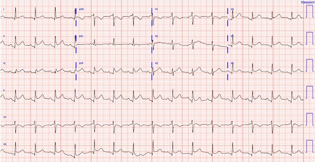
= — Bạn nghĩ gì? —
= = =
Điện tâm đồ này được ghi 30 phút sau, khi bệnh nhân vẫn còn đau:

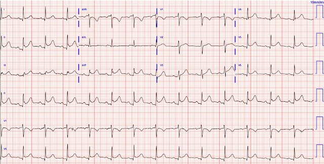
= = =
Queen of Hearts cho biết không có dấu hiệu STEMI hay tương đương STEMI ở cả hai bản ghi:

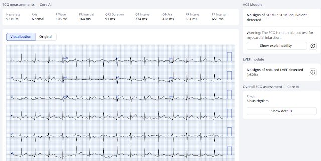

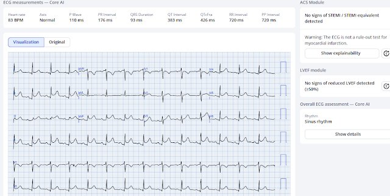
Mới: PMcardio for Individuals App 3.0 nay đã có mô hình Queen of Hearts mới nhất cùng khả năng giải thích của AI (bản đồ nhiệt màu xanh! ). Tải ngay cho iOS hoặc Android. (Công bố đầy đủ — BS. Smith và BS. Meyers là cổ đông của Powerful Medical.)
= = =
Bác sĩ lo ngại khả năng tắc động mạch vành cấp và đã kích hoạt phòng thông tim (cath lab).
- Chụp mạch vành không thấy bệnh mạch vành đáng kể:

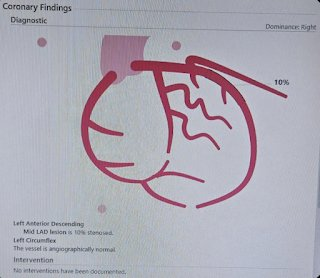
= = =
Kết quả cận lâm sàng:
- Troponin I lần đầu là 10 ng/L.
- Troponin lần hai là 23 ng/L. Không đo thêm lần nào nữa trong đợt nằm viện này.
- Siêu âm tim cho thấy EF bình thường, không có rối loạn vận động thành, không có tràn dịch màng ngoài tim.
= = =
Hiện đã có rất nhiều dữ liệu cho thấy Queen giảm đáng kể số dương tính giả:
- 1. Giảm 58% số dương tính giả trước viện (hồi cứu).
- 2. Midwest STEMI Consortium: giảm 33% số dương tính giả (báo cáo tại ACC Quality Summit San Antonio 2024).
- 3. Willy Frick, Đại học St. Louis, báo cáo tại Heart Rhythm Society: 1 tháng bệnh nhân đau ngực tại khoa cấp cứu (ED). 528 bệnh nhân đau ngực, 14 người có tổn thương thủ phạm. Queen phát hiện 11/14 mà không có dương tính giả nào. Bác sĩ tim mạch phát hiện 6/14 với 3 dương tính giả.
- 4. Macherey-Meyer S. Báo cáo tại Hội Tim mạch Đức. 1770 bệnh nhân đau ngực. 56 OMI. Độ đặc hiệu 0.967. Giá trị tiên đoán âm 98.4% và giá trị tiên đoán dương 34.1%. Phân tích dưới nhóm ở những bệnh nhân đã được loại trừ theo thuật toán hs-cTnT 0/1h cho thấy mô hình AI phân loại sai thành dương tính giả ở 1% số điện tâm đồ. Độ đặc hiệu và độ chính xác đều là 0.989 (KTC 95%: 0.983-0.994 — Xem Bảng 2). Giá trị tiên đoán âm là 100% (KTC 95%: 100-100).
Còn nhiều công trình chưa công bố cho thấy số dương tính giả giảm mạnh khi dùng mô hình AI PMCardio Queen of Hearts.
= = =
Đây là điện tâm đồ ngày hôm sau:

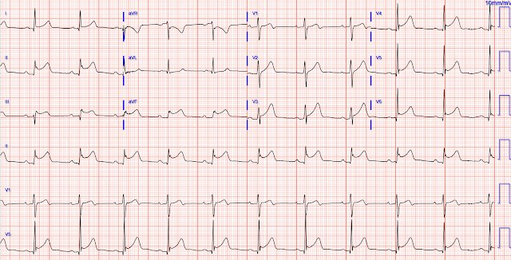
(QoH đọc sai bản ghi này — gọi là STEMI/OMI, điều dễ hiểu vì có ST chênh lên ở III kèm ST chênh xuống ở aVL.)
= = =
Bệnh nhân được cho dùng colchicine và xuất viện.
- Khoảng 1 tháng sau, bà quay lại với triệu chứng tương tự.

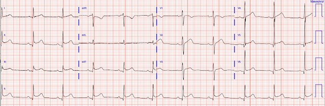
= = =
Siêu âm tim làm lại ở lần tái khám này phát hiện tràn dịch màng ngoài tim lượng ít.
Kết quả đọc MRI tim:
Viêm màng ngoài tim cấp kèm dấu hiệu sinh lý co thắt giai đoạn sớm. Màng ngoài tim dày lan tỏa. Có ngấm thuốc muộn gadolinium lan tỏa ở lá thành và lá tạng màng ngoài tim, phù hợp với viêm màng ngoài tim. Có tràn dịch màng ngoài tim lượng ít, bao quanh chu vi. Không có dấu hiệu sinh lý chèn ép tim. Có hiện tượng phụ thuộc lẫn nhau giữa hai thất, thể hiện bằng vách liên thất nảy nhẹ (septal bounce), và tĩnh mạch chủ dưới (IVC) giãn 2.9 cm, xẹp dưới 50% khi hít vào ==> các dấu hiệu này gợi ý sinh lý co thắt giai đoạn sớm. Không có ngấm thuốc muộn gadolinium (LGE) ở cơ tim gợi ý viêm, thâm nhiễm hay nhồi máu cơ tim thất trái.
= = =
Đã lấy hai mẫu troponin, cả hai đều dưới 6 ng/L.
- Bệnh nhân được cho dùng một đợt colchicine và ibuprofen kéo dài.
- Các xét nghiệm tìm nguyên nhân thấp khớp và nhiễm trùng đều âm tính.
= = =
Điện tâm đồ này được ghi vào ngày thứ 4 của đợt nằm viện:

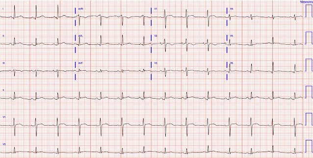
= = =
Điện tâm đồ này được ghi vào ngày thứ 6 của đợt nằm viện:

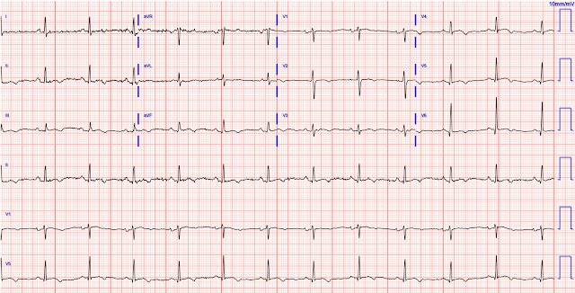
Chẩn đoán cuối cùng = viêm màng ngoài tim vô căn tái phát.
- Bệnh nhân được xuất viện.
= = =
Đây là điện tâm đồ của bà 6 tháng sau, trong một lần khám ngoại trú, không có triệu chứng:

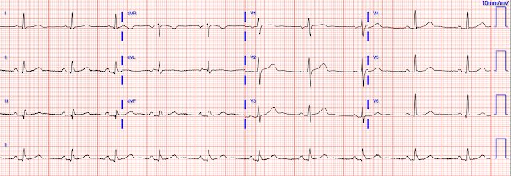
= = =
4 giai đoạn của viêm màng ngoài tim:
“Bốn giai đoạn của viêm màng ngoài tim trên điện tâm đồ” thường được giảng dạy như sau:
- Giai đoạn 1: ST chênh lên (STE) lan rộng và đoạn PR chênh xuống
- Giai đoạn 2: đoạn ST trở về đường nền kèm sóng T dẹt
- Giai đoạn 3: sóng T đảo ngược
- Giai đoạn 4: trở về bình thường
Dĩ nhiên, 4 giai đoạn này không nhất thiết diễn ra theo một trình tự thời gian điển hình nào (và có thể không có các điện tâm đồ liên tiếp được ghi đúng thời điểm để bắt được từng giai đoạn).
- Dù vậy — bệnh nhân hôm nay dường như thỏa mãn trình tự kinh điển, như thể hiện trong lần nhập viện thứ 2 của bà.
- Điểm MẤU CHỐT: Xin hãy hiểu rằng viêm màng ngoài tim thực sự là cực kỳ hiếm so với ST chênh lên nền biến thể bình thường.
- T.B. (P.S.): Xin hãy cẩn trọng! Tác hại của một lần chẩn đoán OMI chậm trễ do bị chẩn đoán nhầm là viêm màng ngoài tim — lớn hơn rất nhiều so với lợi ích của việc nhanh chóng chẩn đoán đúng nhiều ca viêm màng ngoài tim dương tính thật. OMI thì thường gặp, còn viêm màng ngoài tim thì hiếm. Như BS. Smith nói, “chẩn đoán viêm màng ngoài tim là bạn tự chuốc lấy hiểm nguy!”
Hãy xem các ca này nếu bạn chưa hiểu điều đó có thể nguy hiểm đến mức nào:
- You Diagnose Pericarditis at your Peril (at the Patient’s Peril!) (Chẩn đoán viêm màng ngoài tim là bạn tự chuốc hiểm nguy — hiểm nguy cho bệnh nhân!)
- Watch what happens when “pericarditis” and morphine cloud your judgment (Hãy xem điều gì xảy ra khi “viêm màng ngoài tim” và morphin che mờ phán đoán của bạn)
- 24 yo woman with chest pain the morning after binge drinking: Is it Pericarditis? (Nữ 24 tuổi đau ngực vào buổi sáng sau một đêm uống rượu quá chén: có phải viêm màng ngoài tim?)
- “Pericarditis” strikes again (“Viêm màng ngoài tim” lại ra đòn)
Xem các ca khác của chúng tôi liên quan đến viêm màng ngoài tim tại đây:
- A young woman in her early 20s with syncope (Một phụ nữ trẻ mới ngoài 20 tuổi bị ngất)
- Severe Atypical Chest Pain in a Young Woman: Series of Pericarditis ECGs (Đau ngực không điển hình dữ dội ở một phụ nữ trẻ: loạt điện tâm đồ viêm màng ngoài tim)
Dưới đây là một số ca điện tâm đồ viêm cơ tim ở người trẻ:
- https://drsmithsecgblog.com/2019/06/a-20-something-male-with-acute-chest.html —
- https://drsmithsecgblog.com/2017/11/anterior-st-elevation-with-elevated.html —
- https://drsmithsecgblog.com/2017/03/a-young-man-with-sudden-chest-pain.html —
- https://drsmithsecgblog.com/2014/11/a-young-woman-with-chest-pressure-and.html —
- https://drsmithsecgblog.com/2014/06/a-29-year-old-male-with-pleuritic-chest.html —
- https://drsmithsecgblog.com/2013/10/inferior-and-lateral-st-elevation.html —
= = =
Một ca viêm cơ tim ở trẻ 8 tuổi:
Một ca nhồi máu cơ tim cấp ở trẻ 16 tuổi:
= = =
==================================
BÌNH LUẬN CỦA TÔI, bởi KEN GRAUER, MD (15/6/2025 — cập nhật cho WordPress ngày 30/7/2026):
Y học luôn khiến ta khiêm tốn. Và dù chắc chắn tôi đã đưa viêm màng ngoài tim cấp vào chẩn đoán phân biệt khi lần đầu xem ca hôm nay — tôi không nghĩ viêm màng ngoài tim đơn thuần (không kèm thành phần viêm cơ tim) là khả năng cao. Thay vào đó — tôi nghĩ bệnh nhân này bị tắc LCx cấp.
- Để rõ ràng, trong Hình 1 — tôi đã in lại điện tâm đồ ban đầu của ca hôm nay.
= = =
Vì sao tôi nghĩ: “Nhồi máu cơ tim cấp cho đến khi chứng minh được điều ngược lại” …
Điện tâm đồ ở Hình 1 cho thấy nhịp xoang tần số ~90/phút — các khoảng và trục bình thường — không lớn buồng tim — và ST chênh lên ở nhiều nơi.
- Người phụ nữ ngoài 50 tuổi này bị đánh thức khỏi giấc ngủ bởi CP dữ dội, mới xuất hiện (đau ngực — Chest Pain) — khiến bà phải đến khoa cấp cứu. Như BS. Meyers đã nêu — về mặt thống kê, trong bối cảnh này nhồi máu cơ tim cấp gặp nhiều hơn hẳn viêm màng ngoài tim cấp (và nguy cơ bệnh tật và tử vong do bỏ sót nhồi máu cơ tim cấp vượt xa so với bỏ sót viêm màng ngoài tim cấp). Do đó — Hãy coi là nhồi máu cơ tim cấp cho đến khi chứng minh được điều ngược lại!
= = =
Về các dấu hiệu điện tâm đồ ở Hình 1 gợi ý nhồi máu cơ tim cấp cho đến khi chứng minh được điều ngược lại:
- Có sóng Q ở nhiều chuyển đạo trên điện tâm đồ #1 — và đây cũng chính là những chuyển đạo có ST chênh lên.
- ST chênh lên dường như tương ứng với nhồi máu dưới-bên cấp (tôi nghi tắc cấp một LCx ưu thế).
- Chuyển đạo aVL dường như có thay đổi ST soi gương (reciprocal) (dù mức ST chênh xuống ở aVL không nhiều như tôi thường kỳ vọng, xét theo mức độ và tính cấp tính của ST chênh lên ở chuyển đạo III ).
- Không chỉ có ST chênh lên — chuyển đạo V3 (và ở mức độ ít hơn, chuyển đạo V4) trông tối cấp (mũi tên XANH làm nổi bật đỉnh sóng T “béo” không tương xứng và kích thước sóng T “đồ sộ” hơn mong đợi ở chuyển đạo V3 này).
- Ban đầu tôi nghĩ có T-QRS-D (biến dạng phần cuối QRS — Terminal QRS Distortion) ở chuyển đạo V4. Nếu đúng — điều này gần như khẳng định nhồi máu cấp (Xem Bình luận của tôi trong bài đăng ngày 14 tháng Mười Một năm 2019 trên Dr. Smith’s ECG Blog để biết thêm về T-QRS-D).
- Điều cốt lõi: Dù cần thêm dữ liệu — nhận định ban đầu của tôi về điện tâm đồ #1 là STEMI dưới-bên cấp đang diễn tiến, cần thông tim kịp thời.
= = =
Hình 1: Điện tâm đồ ban đầu trong ca hôm nay (kèm hình phóng đại chuyển đạo V4 và V6 ở 2 ô chèn bên dưới).

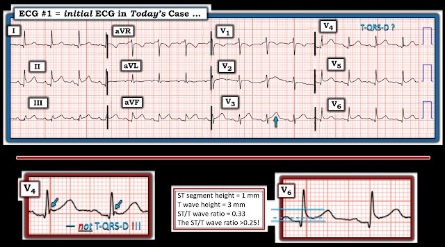
= = =
Các dấu hiệu điện tâm đồ ủng hộ và chống lại viêm màng ngoài tim cấp:
Tôi không nghĩ điện tâm đồ ban đầu của ca hôm nay gợi ý viêm màng ngoài tim cấp đơn thuần. Rõ ràng nó có thể phù hợp với viêm cơ-màng ngoài tim cấp — vì hình ảnh điện tâm đồ của viêm cơ tim cấp có thể biểu hiện gần như bất cứ điều gì, và có thể không phân biệt được với điện tâm đồ của nhồi máu cơ tim cấp. Hãy xem xét những điểm sau:
- Như BS. Smith và BS. Meyers đã nhiều lần nhấn mạnh trên ECG Blog này — Chẩn đoán viêm màng ngoài tim cấp là bạn “tự chuốc lấy hiểm nguy” — vì lý do đơn giản là trong bối cảnh cấp cứu không chọn lọc, nhồi máu cơ tim cấp gặp nhiều hơn viêm màng ngoài tim rất nhiều (và nguy cơ bệnh tật cũng như nguy cơ tử vong do bỏ sót nhồi máu cơ tim cấp lớn hơn rất nhiều so với bỏ sót viêm màng ngoài tim cấp).
- Ủng hộ chẩn đoán viêm màng ngoài tim cấp trên điện tâm đồ — là ST chênh lên lan tỏa (thấy ở các chuyển đạo I,II,III,aVF; và các chuyển đạo V3,V4,V5,V6).
Nhưng chống lại chẩn đoán viêm màng ngoài tim cấp trên điện tâm đồ là các dấu hiệu sau:
- Có sóng Q lan tỏa ở hầu hết các chuyển đạo có ST chênh lên. Dù các sóng Q này nhỏ và hẹp:
- Theo kinh nghiệm của tôi, một trong những đặc điểm điện tâm đồ đặc trưng nhất của viêm màng ngoài tim cấp — là hình dạng ST-T ở chuyển đạo II giống hình dạng ST-T ở chuyển đạo I (so với tình huống nhồi máu cơ tim thành dưới cấp — khi hình dạng ST-T ở chuyển đạo II giống với những gì ta thấy ở chuyển đạo III hơn nhiều so với hình dạng ST ở chuyển đạo I).
- T-QRS-D không có ở chuyển đạo V4 của Hình 1 (Như thấy ở ô chèn phóng đại — Khi nhìn kỹ, mũi tên XANH làm nổi bật một khía rõ ràng ở điểm J, loại trừ khả năng T-QRS-D).
- Dù tỷ lệ ST/sóng T ở chuyển đạo V6 “dương tính” với viêm màng ngoài tim (tức là, tỷ lệ ST/T = 0.33, lớn hơn 0.25) — tôi không thấy kết quả này thuyết phục vì mức ST chênh lên ở chuyển đạo V6 chỉ 1 mm, do đó dễ bị sai số chỉ với một thay đổi nhỏ của điểm tham chiếu được chọn để đo (Xem Hình 3 trong Bình luận của tôi ở bài đăng ngày 8 tháng Sáu năm 2022 — để biết thêm về tỷ lệ ST/sóng T ở chuyển đạo V6 trong chẩn đoán viêm màng ngoài tim).
- Với hình ảnh điện tâm đồ “điển hình như sách giáo khoa” của viêm màng ngoài tim cấp — ST chênh lên ở tất cả các chuyển đạo trừ các chuyển đạo phía bên phải (tức là các chuyển đạo III,aVR,V1). Không nên có gợi ý thay đổi soi gương (như ta thấy ở chuyển đạo aVL của Hình 1) — và không nên có đoạn ST phẳng ở chuyển đạo V2 (như ta thấy ở Hình 1).
- Như đã nói ở trên — ST-T ở chuyển đạo V3 (và ở mức độ ít hơn, ở chuyển đạo V4) trông tối cấp (mũi tên XANH làm nổi bật đỉnh sóng T “béo” không tương xứng và kích thước sóng T “đồ sộ” hơn mong đợi ở chuyển đạo V3 này). Ngược lại — với “hình ảnh sách giáo khoa” của viêm màng ngoài tim cấp đơn thuần, các sóng ST-T vốn “bình thường” có xu hướng trông như được “nhấc” lên trên đường nền điện tâm đồ, thay vì tạo ra hình dạng tối cấp như ta thấy ở chuyển đạo V3.
- LƯU Ý #1: Viêm cơ tim cấp hoàn toàn có thể tạo ra hình ảnh điện tâm đồ y hệt như ta thấy ở Hình 1 — khi đó sẽ không thể phân biệt viêm cơ tim cấp với nhồi máu cơ tim cấp chỉ dựa trên một điện tâm đồ duy nhất này. Nhưng thông tim hoàn toàn bình thường — troponin âm tính — siêu âm tim bình thường, không có rối loạn vận động thành — và MRI bình thường (không có bằng chứng viêm) đã loại trừ viêm cơ tim cấp.
- LƯU Ý #2: Bệnh sử của ca hôm nay không đề cập đến việc có (hay không có) tiếng cọ màng ngoài tim. Điều này thật đáng tiếc (nhưng lại quá phổ biến trong các ca tôi thường xuyên thấy đăng trên internet) — vì NẾU nghe được tiếng cọ màng ngoài tim, thì bạn đã có được chẩn đoán viêm màng ngoài tim cấp!
- LƯU Ý #3: Không có đề cập nào về mối liên quan với tư thế hay tính chất kiểu màng phổi trong CP của bệnh nhân này (thay vào đó, CP được mô tả là “liên tục” và “như dao đâm”, kèm buồn nôn). Dù mô tả của bệnh nhân về tính chất CP theo định nghĩa là chủ quan (và tương quan không hoàn hảo với mô tả đau màng ngoài tim trong sách giáo khoa) — CP do viêm màng ngoài tim có xu hướng “kiểu màng phổi” (tăng khi hít vào do thường kèm viêm màng phổi) — và “thay đổi theo tư thế” (thường giảm khi ngồi dậy và nặng lên khi nằm ngửa — tư thế làm tăng “căng kéo” lên màng ngoài tim đang viêm).
= = =
ĐIỀU CỐT LÕI:
- Tôi luôn tin rằng điều quan trọng là thỉnh thoảng được những ca bệnh mà bệnh nhân “không đọc sách giáo khoa” trước khi đi cấp cứu dạy cho bài học khiêm tốn. Thực tế lâm sàng không phải lúc nào cũng đoán trước được. Dù đã viết những chương riêng về các dấu hiệu điện tâm đồ của viêm màng ngoài tim trong mỗi cuốn sách điện tâm đồ tôi viết qua nhiều năm — tôi đơn giản là không thấy điện tâm đồ ban đầu của ca hôm nay gợi ý viêm màng ngoài tim hơn là nhồi máu cơ tim cấp (Xem Hình 2 đến 6 trong Bình luận của tôi ở cuối bài đăng ngày 16 tháng Năm năm 2023 trên Dr. Smith’s ECG Blog để xem ví dụ về các chương như vậy).
- Ca hôm nay quan trọng vì: i) Nó minh họa một chỉ định hoàn toàn thích hợp cho thông tim kịp thời để loại trừ khả năng nhồi máu cấp; — ii) Nó mở rộng hiểu biết của chúng ta về các biểu hiện điện tâm đồ có thể gặp của viêm màng ngoài tim cấp đơn thuần (cũng như con đường chẩn đoán để khẳng định chẩn đoán này); — và, iii) Nó giữ cho chúng ta sự khiêm tốn (đồng thời nhắc chúng ta rằng trong phần lớn các trường hợp bệnh nhân đến khoa cấp cứu vì CP mới, dữ dội, khởi phát đột ngột — chẩn đoán sẽ là một biến cố tim cấp chứ không phải viêm màng ngoài tim hay viêm cơ tim cấp).
= = =
= = =
= = =